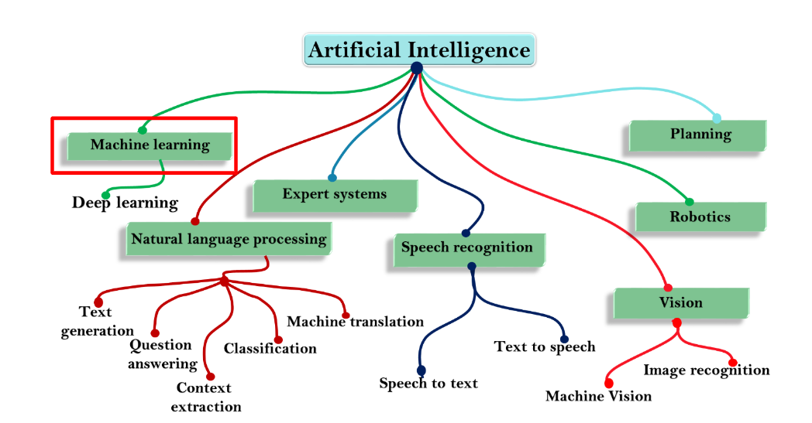

Lesson 1 - What is AI?
At the end of this lesson, you will be able to:
- Explain the term AI and key terminology.
- Give examples of AI used in your daily life.
- Identify the different subsets of AI.
Intelligent machines
What do you think AI (artificial intelligence) is?
Questions to think about:
- Can computers be more intelligent than humans? How?
- Would you trust a computer to make all decisions? Why/why not?
- Could AI potentially stifle creativity? How?
- Who would program the computer/robot to make the decisions?
- What about the morals and ethics of the person/people/organizations programming the computer?
Definition of AI
AI - term coined in 1956 by John McCarthy at Dartmouth College.
A branch of computer science that allows computers to make predictions and decisions. Making predictions refers to the ability to analyze the most likely outcome based on pattern recognition. Prediction is about using the information you have to generate information you don’t have. For example, predicting next week's weather.
Making decisions refers to the ability to complete specific tasks without coded instruction. For example, Google maps deciding on the best route based on lots of different data.
Why AI?
AI adds intelligence to existing products.
- Example: Adobe Photoshop’s Select Subject feature, uses a fairly sophisticated AI to select part of an image that resembles the focus of a shot.
Automates repetitive learning.
- Example: AI systems to predict and prevent traffic jams
Adapts through learning from user experience.
- Example: Chatbots to answer customer’s queries
Improves accuracy and decision-making
- Example: Zest Finance uses AI to help companies assess borrowers with little to no credit information or history.
Intelligent offerings
- Example: Auto-transcription saves several man hours by performing transcription in a matter of seconds. This allows the focus to remain on the content.
Empowered employees
- Example: Grammarly, the writing correction software from Grammarly, Inc.
- AI-based virtual assistants help employees’ priorities tasks and plan activities.
Turing test
Turing Test is an important concept in the philosophy of AI
- Described by Alan Turing in 1950.
- Determines whether computers are capable of Human Intelligence.
- Uses computers to simulate intelligent behavior and critical thinking.
During the Turing test, the human questioner asks a series of questions to both respondents. After the specified time, the questioner tries to decide which terminal is operated by the human respondent and which terminal is operated by the computer. If the questioner cannot determine which is which, the computer displays intelligence.

AI subsets
Artificial Intelligence has many subsets. In this unit, we will explore Machine Learning (ML).
